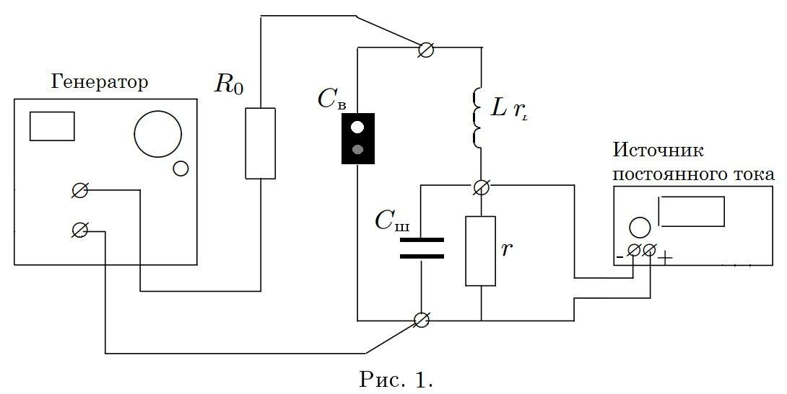
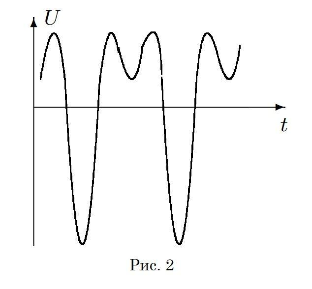

Y20 (2020) — English translation
$!Важно:$ before changing the circuit configuration, smoothly turn the amplitude of the generator to zero, then turn off the generator and the current source! New reels will not be issued!
\emph{Equipment used in this part:} generator, DC voltage source, oscilloscope, multimeter, instrument wire set, breadboard, board wire set, varicap, resistor $R_0=1~МОм$ (beige color), resistor $r=10~Ом$ (blue color), three inductor $L_1=3,3~мГн, L_2=15,0~мГн, L_3=15,0~мГн$, capacitor $C_{ш}=10~мкФ$ (marking 105).
In the first part of the work, the resonant properties of a nonlinear oscillatory circuit are studied. A semiconductor diode (varicap) is used as a nonlinear element included in the oscillatory circuit, the capacitance of which depends on the magnitude of the constant voltage across it.
At an arbitrary moment of time, the voltage on the varicap is $U=U_\sim + V$, where $U_\sim-$ is the variable voltage component, and $V-$ is the constant voltage component. Let a constant voltage $V=-V_0$ be maintained on the varicap $C$, then the dependence of the varicap capacitance on the voltage across it in the vicinity of the operating point can be written as: $$ C(V)=C_0+\chi(V+V_0)+\beta(V+V_0)^2 $$
Соберите установку (рис. 1). В этой части используйте только катушку $L_1$. Pay attention to the polarity of the varicap connection! The white point is connected to the positive of the source.

Due to the fact that the capacitance of the circuit depends on the voltage, under some conditions the oscillation frequency in it may not coincide with the frequency of the generator. In particular, at the generator frequency $\omega = \frac{\omega_0}{2}$, oscillations with a natural frequency $\omega_0$ arise.
Using the Kirchhoff equations and some expansions in the vicinity of the operating point, we can obtain the equation for oscillations of the variable component of the voltage on the varicap in the form: $$ \ddot{U}+2\gamma\dot{U}+\omega_0^2U=-\omega_0^2U_0sin(\omega t)+\alpha' U^2 $$ где введены обозначения $U_0=\cfrac{L\omega_0}{R_0}\mathcal{E}_0,~\alpha'=2\omega_0^2 \cfrac{\chi-\beta V_0}{C_0-\chi V_0}$.
At the generator frequency $\frac{\omega_0}{2}$ the signal will look like in Figure 2.

Source: https://pho.rs/p/42